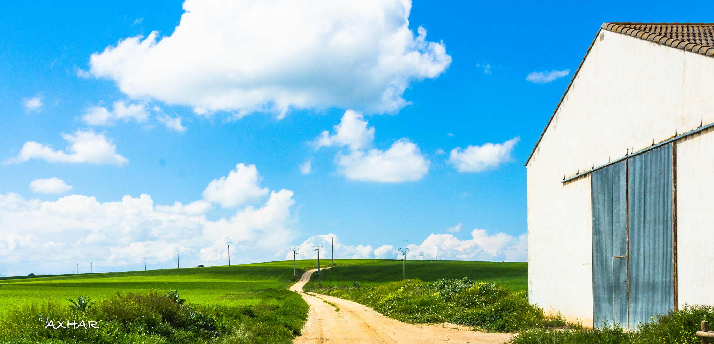
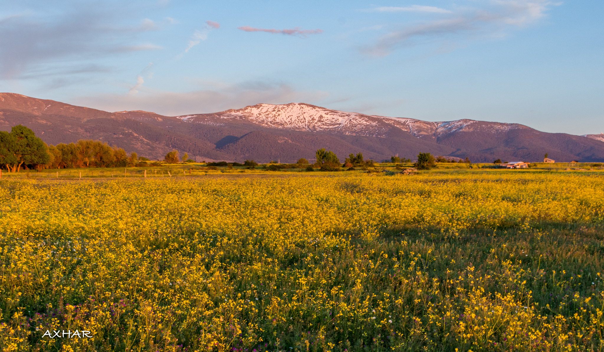
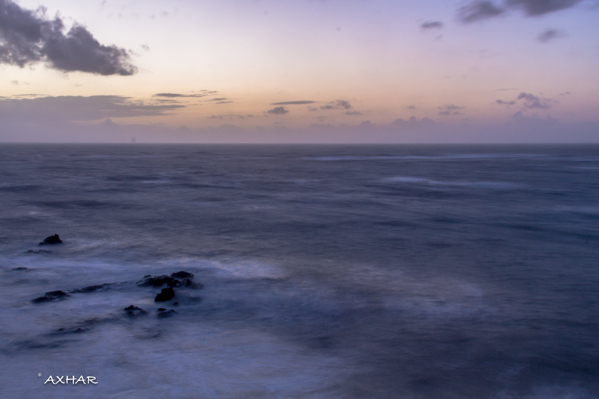
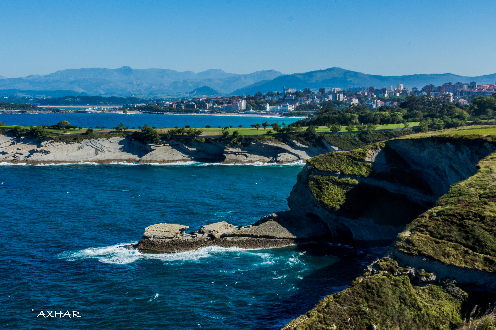

Plain green Landscape
Spain has very different and amazing landscape. You can find some plain lands though they are not very comman because because Spain is mainly Mountains. But there alot of feilds and agriculture. Because of this Spain in famouse for its ornage and olives it is one of leading country in the world.

Snow capped mountains
Spain is a storied country of stone castles, snowcapped mountains, vast monuments, and sophisticated cities, all of which have made it a favoured travel destination. The country is geographically and culturally diverse. Its heartland is the Meseta, a broad central plateau half a mile above sea level.
.jpg)
Trees with Mountain
Spainish landscape is one of most beautiful and senic. Most of the topography of Spain consists of flat plains that are surrounded by rugged, undeveloped hills. Plants and trees grow so well on the northwestern coast, in Galicia and along the Bay of Biscay, that the area is called Green Spain. Rain, trapped by the mountains farther inland, is frequent. Beech and oak trees flourish here. Numerous coves and inlets break up the coastline.

Gulf of Cadiz
The Gulf of Cadiz is located in the eastern sector of the North Atlantic Ocean, to the
southwest of the Iberian Peninsula. Its eastern boundary is the Strait of Gibraltar, western
border of the Mediterranean Sea. It is structurally a highly complex area, containing important
geomorphological elements such as large submarine canyons and seamounts. The hydrology is also
complex due to the interaction between waters formed in the Atlantic with water of Mediterranean
origin.
.jpg)
Javea
The coastal jewel of Javea is bookended by rocky headlands and is a prime example of old world meets modern energy. The "old town" district is filled with remains of walls built to keep out pirates, as well as a 14th-century church. Visit the beautiful white-sand Arenal beach, brimming with shops, restaurants and, in the summer, hopping beachside bars.

Costa de Cantabria
The coast of Cantabria, which stretches over 200 km, from Castro Urdiales, east of the city Laredo, to the Ría de Tina Mayor, formed by the mouth of the River Deva which marks the border with the province of Asturias in the west.
The small or large coves, hidden between the cliffs, with ninety beaches spread along this part of the Bay of Biscay coast, make the Costa de Cantabria a beautiful seaside destination.
The beach of the natural park Oyambre, near San Vicente de la Barquera, on the Rabia river with its impressive dunes, that of Salvé in Laredo, the longest in Cantabria with 5 km, or those urban of El Sardinero in Santander are among the most frequented.